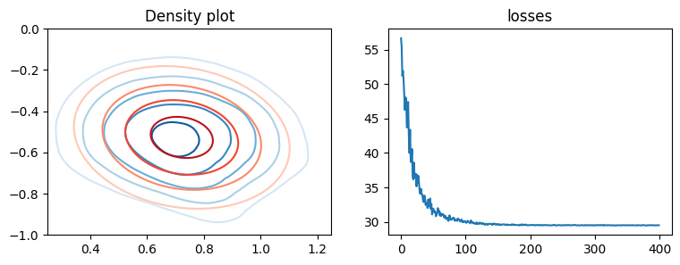
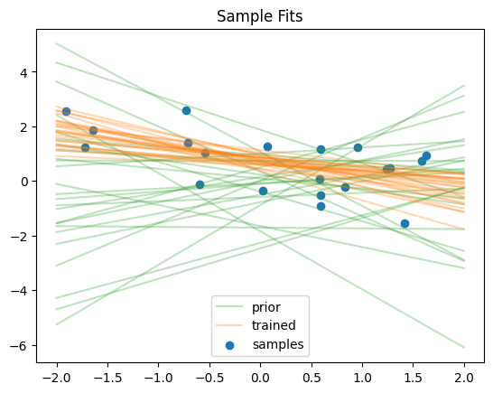

Variational inference#
We will fit a simple 1D Bayesian linear regression with known variance. The likelihood is given by,
\[y \sim \mathcal{N}(w_0 + w_1x,\ 1),\]
and the prior is,
\[w_0, w_1 \sim N(0,\ I).\]
[1]:
import jax.numpy as jnp
import jax.random as jr
import matplotlib.pyplot as plt
from jax.scipy.stats import multivariate_normal, norm
from flowjax.bijections import Affine
from flowjax.distributions import StandardNormal
from flowjax.flows import masked_autoregressive_flow
from flowjax.train import fit_to_key_based_loss
from flowjax.train.losses import ElboLoss
# generate observed data
data_key = jr.key(0)
w_0 = 0.5
w_1 = -0.5
n = 20
key, x_key, noise_key = jr.split(data_key, 3)
x = jr.uniform(x_key, shape=(n,)) * 4 - 2
y = w_0 + w_1 * x + jr.normal(noise_key, shape=(n,))
We can define our objective, via the unnormalised posterior distribution. This maps samples \(w\) to a vector of unnormalised probabilites
[2]:
def unormalized_posterior(w):
likelihood = norm.logpdf(y, w[0] + x * w[1]).sum()
prior = norm.logpdf(w).sum() # Standard normal prior
return (likelihood + prior).sum()
We define and fit the flow. Note that we set invert=False, which loosely speaking specifies that we prioritise faster sample and sample_and_log_prob methods for the flow, instead of a fast log_prob method. The evidence lower bound (ELBO) approximation is computed using the sample_and_log_prob method.
[3]:
loss = ElboLoss(unormalized_posterior, num_samples=100)
key, flow_key, train_key = jr.split(key, 3)
flow = masked_autoregressive_flow(
flow_key, base_dist=StandardNormal((2,)), transformer=Affine(), invert=False,
)
# Train the flow variationally
flow, losses = fit_to_key_based_loss(
train_key, flow, loss_fn=loss, learning_rate=1e-3, steps=400,
)
100%|██████████| 400/400 [00:02<00:00, 157.09it/s, loss=29.5]
We can now visualise the learned posterior, here using contour plots to show the approximate (blue) and true (red) posterior
[4]:
def plot_density(
ax, density_fn, xmin=-5, xmax=5, ymin=-5, ymax=5, n=100, levels=None, cmap="Blues",
):
xvalues = jnp.linspace(xmin, xmax, n)
yvalues = jnp.linspace(ymin, ymax, n)
x, y = jnp.meshgrid(xvalues, yvalues)
points = jnp.hstack([x.reshape(-1, 1), y.reshape(-1, 1)])
log_prob = density_fn(points).reshape(n, n)
prob = jnp.exp(log_prob)
ax.contour(
prob, levels=levels, extent=[xmin, xmax, ymin, ymax], origin="lower", cmap=cmap,
)
ax.set_xlim(xmin, xmax)
ax.set_ylim(ymin, ymax)
fig, axes = plt.subplots(ncols=2, figsize=(9, 3))
axes[0].set_title("Density plot")
kwargs = {"xmin": 0.25, "xmax": 1.25, "ymin": -1, "ymax": 0, "levels": 5}
plot_density(axes[0], flow.log_prob, cmap="Blues", **kwargs)
# True posterior for comparison
_x = jnp.vstack([jnp.ones_like(x), x]) # full design matrix
cov = jnp.linalg.inv(_x.dot(_x.T) + jnp.eye(2))
mean = cov.dot(_x).dot(y)
def true_posterior_log_prob(theta):
return multivariate_normal.logpdf(theta, mean, cov)
plot_density(axes[0], true_posterior_log_prob, cmap="Reds", **kwargs)
axes[1].set_title("losses")
axes[1].plot(losses)
[4]:
[<matplotlib.lines.Line2D at 0x7509341ac380>]

We can visualise the regression fits
[5]:
x_inspect = jnp.linspace(2, -2, n)
plots = [
("prior", StandardNormal((2,)), "tab:green"),
("trained", flow, "tab:orange"),
]
n_samples = 25
for label, flow, colour in plots:
key, sample_key = jr.split(key)
w = flow.sample(sample_key, (n_samples,))
for ix, (w_0, w_1) in enumerate(w):
y_inspect = w_0 + w_1 * x_inspect
lab = label if ix == 0 else None
plt.plot(x_inspect, y_inspect, alpha=0.3, c=colour, label=lab)
plt.scatter(x, y, label="samples")
plt.title("Sample Fits")
plt.legend()
plt.show()

[ ]: